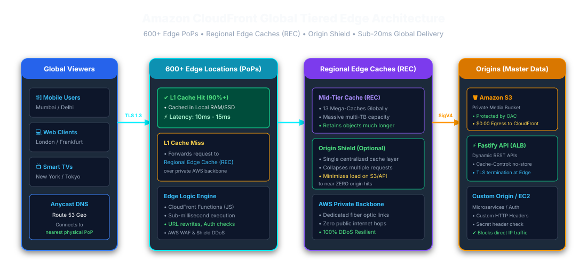
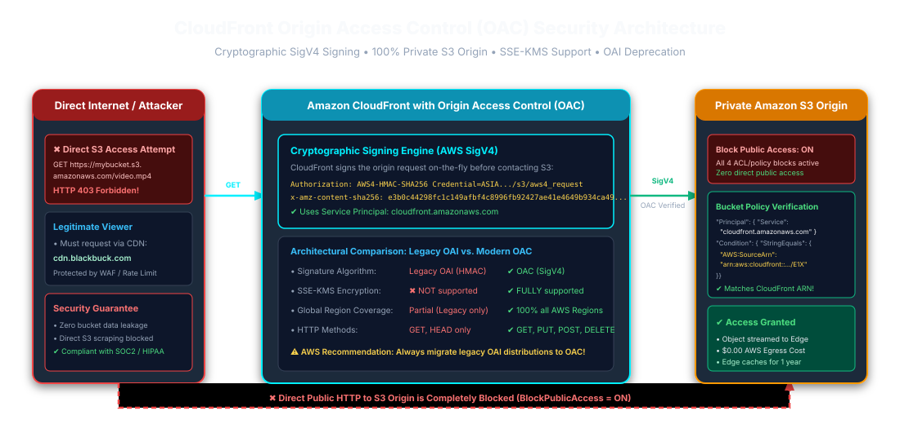
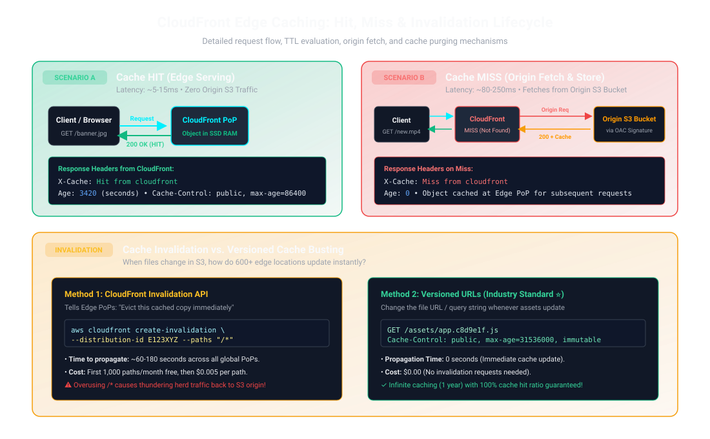
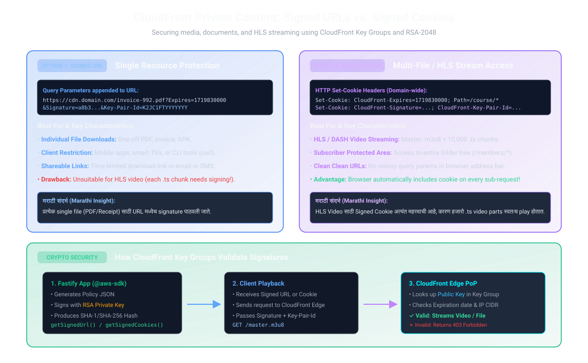
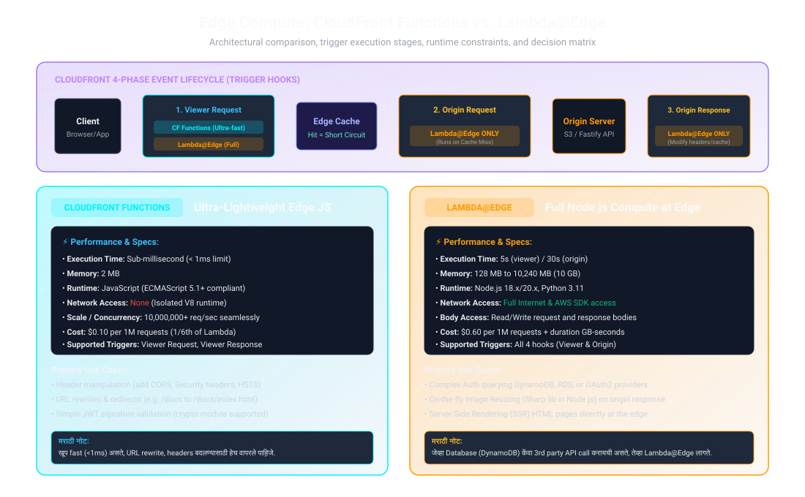

Amazon CloudFront & S3 Edge Architecture
The definitive production handbook for software engineers, cloud architects, and Node.js developers. Master Origin Access Control (OAC), low-latency HLS video streaming, edge compute triggers, and 25+ real-world interview challenges with Marathi translations.
01. Global Edge Infrastructure & 3-Tier Hierarchy
Amazon CloudFront uses AWS's global network to deliver media, APIs, and static assets from edge locations. It operates through edge locations and regional edge caches, with Origin Shield available as an optional additional cache layer. Latency depends on the viewer route, cache state, and origin behavior.

02. Core CloudFront Terminology
| Terminology | Technical AWS Definition | Real-World Fastify / Media Analogy |
|---|---|---|
| Distribution |
Top-level CDN configuration assigned a DNS domain name (e.g.
d111.cloudfront.net).
|
The public entry gateway serving all website and video media. |
| Origin | Authoritative source where original un-cached assets live (S3 Bucket, ALB, EC2, API Gateway). | The master warehouse (S3 storage) holding raw files. |
| Origin Access Control (OAC) | SigV4 authorization mechanism ensuring only CloudFront can read S3 bucket objects. | The digital security badge allowing only CloudFront inside. |
| Cache Behavior |
URL path pattern (e.g., /images/*) controlling TTL, cookies,
headers, and query strings.
|
Routing middleware directing specific paths to custom cache logic. |
03. Origin Access Control (OAC) vs Legacy OAI
In August 2022, AWS released Origin Access Control (OAC), completely replacing legacy Origin Access Identity (OAI). OAC uses AWS SigV4, supports customer-managed KMS encryption, and works in all AWS regions.

{
"Version": "2012-10-17",
"Statement": [
{
"Sid": "AllowCloudFrontOACReadOnly",
"Effect": "Allow",
"Principal": {
"Service": "cloudfront.amazonaws.com"
},
"Action": "s3:GetObject",
"Resource": "arn:aws:s3:::blackbuck-production-media/*",
"Condition": {
"StringEquals": {
"AWS:SourceArn": "arn:aws:cloudfront::123456789012:distribution/E2AB1CDEFGHIJK"
}
}
}
]
}AWS:SourceArn देऊन आपण खात्री करतो की फक्त आपल्याच CloudFront
Distribution ला फाईल वाचण्याची परवानगी आहे. कोणीही थेट S3 URL वापरून फाईल चोरू शकत
नाही.
04. Cache Behaviors, TTLs, and Cache-Control Headers
CloudFront evaluates object expiration based on three configurable values: Minimum TTL, Default TTL, and Maximum TTL, paired with HTTP origin headers.
# 1. Static Hashed Assets (JS, CSS, Images, HLS .ts chunks)
Cache-Control: public, max-age=31536000, immutable
# 2. Dynamic API JSON Responses (Stale-While-Revalidate)
Cache-Control: public, max-age=60, stale-while-revalidate=300
# 3. Sensitive / Private User Data
Cache-Control: no-cache, no-store, must-revalidate, private05. Cache Hit, Miss, and Origin Shield Lifecycle
Understanding the request path during a cache hit vs miss is vital for maintaining low latency and zero origin overload.

06. Cache Invalidation vs. Versioned Cache-Busting
| Factor | CloudFront Invalidation API | Versioned URLs (Cache-Busting) |
|---|---|---|
| Mechanism | aws cloudfront create-invalidation --paths "/*" |
File name contains hash: app.b8c2d.js |
| Propagation Speed | Usually propagates within minutes; actual time can vary | New versioned URL avoids waiting for invalidation |
| Cost | Pricing and free allowance can change; check current AWS pricing | No invalidation charge, but object storage and delivery still have costs |
| Origin Load | High risk: purges cache causing thundering herd to S3 | Zero risk: smooth transition between asset versions |
07. Securing Private Content: Signed URLs vs Signed Cookies
Delivering paid courses, medical records, or HLS video streaming requires cryptographic signature validation at the edge.

08. Edge Compute: CloudFront Functions vs. Lambda@Edge
Running code at edge locations allows you to intercept viewer requests before they hit the cache or modify responses before returning to users.

09. Enterprise Node.js / Fastify Production Implementation
Complete backend service for generating signed download URLs and HLS video streaming
cookies using @aws-sdk/cloudfront-signer.
import { getSignedUrl, getSignedCookies } from '@aws-sdk/cloudfront-signer';
import fs from 'node:fs';
import path from 'node:path';
const CLOUDFRONT_DOMAIN = process.env.CLOUDFRONT_DOMAIN || 'https://media.blackbuck.com';
const KEY_PAIR_ID = process.env.CLOUDFRONT_KEY_PAIR_ID;
const PRIVATE_KEY = process.env.CLOUDFRONT_PRIVATE_KEY
|| fs.readFileSync(path.resolve(process.cwd(), 'certs/cloudfront_private_key.pem'), 'utf-8');
/**
* Generate a CloudFront Signed URL for a single file download.
*/
export function generateSignedDownloadUrl(s3Key, expiresInSeconds = 900) {
const url = `${CLOUDFRONT_DOMAIN}/${s3Key}`;
const dateLessThan = new Date(Date.now() + expiresInSeconds * 1000).toISOString();
return getSignedUrl({
url,
keyPairId: KEY_PAIR_ID,
privateKey: PRIVATE_KEY,
dateLessThan,
});
}
/**
* Generate CloudFront Signed Cookies for HLS streaming (wildcard directory access).
*/
export function generateHlsStreamingCookies(resourcePath, expiresInSeconds = 7200) {
const resourceUrl = `${CLOUDFRONT_DOMAIN}/${resourcePath}`;
const dateLessThan = new Date(Date.now() + expiresInSeconds * 1000).toISOString();
const policy = JSON.stringify({
Statement: [
{
Resource: resourceUrl,
Condition: {
DateLessThan: {
'AWS:EpochTime': Math.floor(new Date(dateLessThan).getTime() / 1000),
},
},
},
],
});
return getSignedCookies({
policy,
keyPairId: KEY_PAIR_ID,
privateKey: PRIVATE_KEY,
});
}10. HLS Video Streaming & Range Requests
HTTP Live Streaming (HLS) delivers adaptive bitrate video via a master playlist
(.m3u8) referencing hundreds of small 6-second video chunks
(.ts). CloudFront optimizes video delivery by natively caching byte-range
requests (HTTP 206 Partial Content) at the edge, drastically speeding up
scrubbing and seeking.
11. CloudFront Security: AWS WAF & Geo-Restrictions
Deploy AWS WAF to automatically filter Layer 7 malicious traffic, rate-limit aggressive clients (e.g. 2,000 requests per 5 minutes), block SQLi/XSS probes, and restrict video streaming to specific countries (Geo-restriction).
12. Cost Optimization Strategies & Production Traps
- PriceClass_100: For US/Europe-only traffic, select PriceClass_100 to save up to 40% on CDN Data Transfer Out fees.
- Brotli Compression: Enable automatic compression in Cache Behavior to shrink JS/CSS payloads by 20% compared to Gzip.
-
Avoid Global Invalidation: Never run
create-invalidation --paths "/*"on every git push; use unique content hashes.
13. 25+ Mid-to-Senior S3 & CloudFront Interview Questions
Exhaustive real-world scenario questions asked by technical interviewers, complete with architectural rationale and Marathi translations.
Answer: OAI is the legacy S3 origin-access mechanism and has limitations, including lack of SSE-KMS support; avoid characterizing it simply as SigV2. OAC is recommended for new S3 origins: it signs requests with SigV4, supports SSE-KMS configurations, and allows bucket policies scoped to a distribution ARN.
AWS:SourceArn तपासून S3 ला १००% सुरक्षित ठेवते.
Answer: On a Cache Hit, CloudFront returns the cached asset with
X-Cache: Hit from cloudfront; Age may indicate cache age.
Actual latency depends on viewer network, location, and cache state. On a Cache
Miss, CloudFront obtains the object through the configured cache/origin path and may
cache it according to policy.
Answer: Use Signed URLs for single individual
files (invoice PDF, installer binary) or when clients do not support cookies (mobile
apps, smart TVs, cURL). Use Signed Cookies for HLS / DASH video
streaming (where the master playlist loads hundreds of small .ts chunks) or
protecting an entire directory (/members/*) without altering URL paths.
Answer: CloudFront Functions run lightweight JavaScript (< 1ms execution, 2MB RAM) at CloudFront edge locations on Viewer Request/Response only, with no network access — ideal for lightweight URL/header logic. Lambda@Edge supports all four event stages and longer-running code, subject to its runtime and deployment restrictions. Check current limits and pricing before selecting either option.
Answer: Consider CloudFront Origin Shield to reduce duplicate origin fetches for concurrent misses. Request collapsing depends on cache key and timing; it lowers origin load but does not guarantee exactly one origin request for every global miss.
Answer: A wildcard invalidation can cause a burst of cache misses
and increased origin requests. Pricing and free allowances can change, so check
current AWS pricing; /* counts as one path. Prefer versioned hashed
filenames and invalidate entry points selectively when needed.
Answer: Yes, by allowing PUT/POST in the Cache
Behavior. However, for large files (> 100MB), S3 Multipart Upload with Presigned
URLs or S3 Transfer Acceleration is preferred because CloudFront imposes timeout and
payload restrictions.
Answer: CloudFront returns an immediate
`HTTP 403 Forbidden` with
<Code>AccessDenied</Code> without contacting S3 origin.
Answer: max-age applies to both browser and CDN
caches. s-maxage (shared max-age) specifically overrides
max-age for public shared caches (like CloudFront) while being ignored
by the browser.
Answer: CloudFront natively caches byte ranges. When a video player
asks for bytes=500000-1000000, CloudFront serves just those bytes
directly from edge RAM, avoiding full file downloads.
Answer: Use CloudFront Key Groups. Add the new public key alongside the old public key in the Key Group. Deploy the new private key to your Node.js application. Once all old tokens expire, remove the old key.
Answer: CloudFront is managed from the global AWS control plane in
us-east-1 (N. Virginia), so ACM certificates must exist in
us-east-1 to be distributed globally to all edge locations.
Answer: For payloads exceeding SQS's 256 KB limit, upload the large payload to S3, send a lightweight JSON message (claim check) containing the S3 pointer to SQS, and have worker consumers download the payload from S3 or CloudFront.
Answer: Configure a Custom Error Response in
CloudFront: map HTTP `403 Forbidden` and `404 Not Found` to
/index.html with HTTP response code `200 OK`, allowing client-side
routers (React, Vue) to handle the path.
Answer: An edge security feature that encrypts sensitive fields (like credit card numbers) at the CloudFront Edge PoP using a public key before forwarding to the origin server, ensuring end-to-end security.
हिंदी Interview Perspective
- Cache design: Cache key, TTL, Minimum TTL और origin headers का संबंध समझाएँ। निजी responses के लिए zero Minimum TTL और user-safe cache key पर ज़ोर दें।
- Origin Shield: यह concurrent misses घटा सकता है, पर हर global miss के लिए एक origin request की guarantee नहीं देता।
- Signed access: Signed URL या cookie का चुनाव client/player की क्षमता और protected resources की संख्या के आधार पर करें।
- Limits: Cacheable GET response की सीमा और HTTP request-body सीमा अलग हैं; interview में वर्तमान AWS quota का स्रोत/तारीख बताएं।
- Observability: `X-Cache`, `Age`, origin latency, error rate और cache-hit ratio साथ में देखें; fixed latency promise न करें।